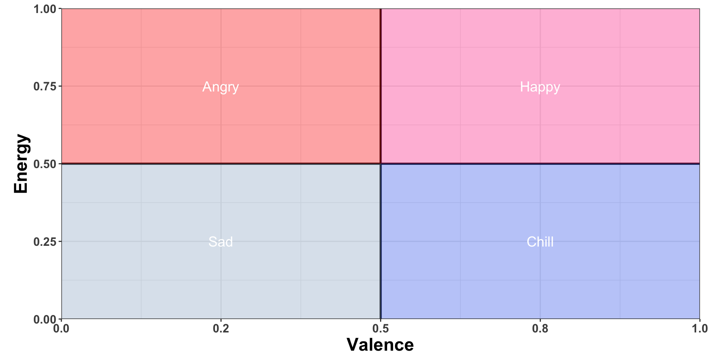

To create a curriculum about interacting with APIs from templates to understand existing functions and how to create own functions.
Example
API Call Template
get_artist example
Load packages. httr, jsonlite, and magrittr.
Log onto Spotify Developer App and create an app to retrieve you “Client ID” and “Client Secret” within the settings.
Set the environment with “Client ID” and “Client Secret”.
As:
Sys.setenv(SPOTIFY_CLIENT_ID =’'XXXXXXXXXXXXXXXXXXXX')
Sys.setenv(SPOTIFY_CLIENT_SECRET =’'XXXXXXXXXXXXXXXXXXXX')
Access Token Retrieval:
post <- RETRY(verb = "POST",
url ="https://accounts.spotify.com/api/token",
accept_json(),
authenticate(SPOTIFY_CLIENT_ID, SPOTIFY_CLIENT_SECRET),
body = list(grant_type = "client_credentials"),
encode = "form") %>%
content
access_token <- post$access_token
Retry function is used to create the GET request. It retries the request in case of failure.
Retry uses the parameters: verb, url, accept_json, authenticate, body, encode, and config.
Verbs are the request method. In this example the “POST” method is used to submit data to a server. The common options for verbs are GET, POST, PUT, DELETE.
The specified URL is used as an endpoint to retrieve the requested data when given the correct credentials.
accept_json is used to indicate response type needed
authenticate creates request headers that contain your private information
body parameter includes a list of ‘grant_type=”client_credentials” ‘ which is requesting for the access token.
encode makes sure that the data provided in the body is in the right format for the server to understand
content is used to extract the information from the post object.
API Call:
Create parameters that include a list of just access_token.
parameters <- list(
access_token = access_token
)
Name endpoint as “artist_url”.
Base artist structure: “https://api.spotify.com/v1/artists”, where adding specific artist ID creates desired endpoint
eg: artist_url <- "https://api.spotify.com/v1/artists/6PvvGcCY2XtUcSRld1Wilr"
Use RETRY function to make API call. Must include:
Verb: get is used to retrieve data from the server.
url
query with “parameters”
encode as json since the server receives requests in json format
Content to receive embedded information from res object. Content function is used to convert res into a readable character vector.
fromJSON uses flatten to turn nested data frames into a single non-nested data frame.
Eg:
res <- RETRY(
verb = "GET",
url = artist_url,
query = parameters,
encode = "JSON"
) %>% content(res, as = 'text')%>% fromJSONExample
API Function Call Template
get_* <- function(required_inputs, not required_inputs, authorization)
url: https://api.spotify.com/v1/part 1/part 2 (optional)/part3 (optional)/{part 4 (optional id)}/part 5 (optional)
#give an example of different URLs
Designated URL that access the requested information from Spotify. The URL usually starts with a starter URL of “https://api.spotify.com/v1/”. Based on the desired URL destination, more parts can be added to the starter URL.
URL Breakdown:
https: Hypertext Transfer Protocol Secure. Connects data between your device and the Spotify API server.
api.spotify.com: The location of the API server.
/v1: Version number of the API.
validate: validate_parameters(artists_or_tracks = artists_or_tracks, artist_or_user = artist_or_user, market = market, country = country, limit = limit, offset = offset, locale = locale, volume_percent = volume_percent, time_range = time_range, position_ms = position_ms, state = state, include_meta_info = include_meta_info)
validate_parameters function taken from the spotifyr package. Verifies whether parameters are in proper format. Not all parameters given above are needed depending on desired function.
params: params <- list( )
Create a list of data needed to be retrieved from Spotify.
retry: res <- httr::RETRY('GET', url,
query = params,
config(token = authorization)
terminate_on = c(401, 403, 404),
encode = 'json')
Use the RETRY function from the httr package. Includes “GET” retrieves data from the URL. The query requests for specific information from the params. Since the params includes the access token, it is using your specific access token to access spotify data. For functions that use an authorization code, the retry function call must include “config(token=authorization)” to allow access to authorize the use of personal information. Terminate handles any status codes that are “non-recoverable”. The 401 status code comes from failed authorization, the 403 indicates a forbidden request even after authentication, and the 404 indicates that the server is not found. Encode turns the requested data from JSON format into a R list.
fromJSON: res <- jsonlite::fromJSON(content(res, as = 'text', encoding = 'UTF-8'), flatten = TRUE)
The content function is used to extract information from the API output. The “as=’text’” is used to indicate that the content is extracted as a string. The encoding is in the most common “UTF-8” format. Next, with the fromJSON function, it takes a string in JSON format and converts it to an R object.1. Make API Call
2. Performs something else
1. Manipulation
2. Select
3. Filter
4. VisualizeData Manipulation Template
Filter Function
*part of “dplyr” library
Use: filters for specific information within a dataframe
Create a data frame using “data.frame” after getting API call results. Not needed if using a function that expects multiple rows of data.
eg: get_artist dataframe
df <- data.frame(
followers = res$followers$total,
genres = res$genres,
href = res$href,
id= res$id,
popularity = res$popularity,
name=res$name,
type=res$type
)
*If there are multiple genres for a single artist, use the “group_by”, “summarise”, and “ungroup” function to create a single row rather than multiple with the same artist.
Eg:
df_combined <- df %>%
group_by(followers, href, id, popularity, type,name) %>%
summarise(
genres = paste(genres, collapse = ", ")
) %>%
ungroup()
Use filter in the syntax: df_combined %>% filter(popularity == 70)
eg:
Before filter:
After filter:
No results since the popularity of the original data frame is 78.
Other filter capabilities:
Adding multiple filters on different variables:
df_combined %>% filter(popularity == 70,type==”artist”)
Different operators:
==: equal to
<=: less than or equal to
>=: greater than or equal to
!=: not equal to
“between” helper function:
df_combined %>% filter(between(popularity,10,78))
select() function
*part of “dplyr” library
Use: selects certain columns on dataframe
Prepare a data frame. Refer to step 1 of the filter function.
Versions of select:
Selecting columns based on name
eg: df_combined %>% select(id, name)
Before select:
After select:
Selecting columns based on position
eg: df_combined %>% select(1, 2)
Before select:
After select:
Selecting columns by index range
eg: df_combined %>% select(1:4)
Before select:
After select:
Selecting columns to remove
eg: df_combined %>% select(-c(name,id))
Before select:
After select:
Selecting columns between variables by name
eg: df_combined %>% select(id:type)
Before select:
After select:
Mutate
Creating a new column using arithmetic from previous columns, keeping all columns
eg: df_combined %>% mutate(new_column=popularity+followers)
Before mutate:
After mutate:Example 1: Get Album Summary
get_album_summary <- function(id, authorization = get_spotify_access_token()){
album <- get_albums(id, authorization = authorization)
tracks <- get_albums_tracks(id, authorization = authorization)
features <- get_track_audio_features(tracks$track_id, authorization = authorization)
summary <- features %>%
dplyr::select(danceability, energy, loudness, speechiness, acousticness, instrumentalness, liveness, valence, tempo, duration_ms, mode) %>%
dplyr::summarize(dplyr::across(dplyr::everything(), list(mean = ~ mean(., na.rm = TRUE), sd = ~ sd(., na.rm = TRUE)), .names = "{.col}_{.fn}"))
result <- merge(album, summary) %>%
dplyr::select(-label,
-release_date,
-release_date_precision,
-type,
-artist_id,
-artist_name)
result
}Example 2: Get Artist Summary
get_artist_summary <- function(id, authorization = get_spotify_access_token()){
artist <- get_artists(id, authorization) %>%
dplyr::select(artist_name, artist_id)
features <- get_artist_audio_features(id, authorization = authorization)
songs <- features %>%
dplyr::mutate(num_songs = dplyr::n()) %>%
dplyr::select(artist_name, num_songs)
result <- dplyr::left_join(artist, songs, by = "artist_name") %>%
dplyr::slice(1)
summary <- features %>%
dplyr::select(danceability, energy, loudness, speechiness, acousticness, instrumentalness, liveness, valence, explicit, tempo, duration_ms, mode) %>%
dplyr::summarize(dplyr::across(dplyr::everything(), list(mean = mean, sd = sd), na.rm = TRUE))
result <- merge(result, summary)
result
}Taylor Swift Albums
